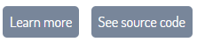
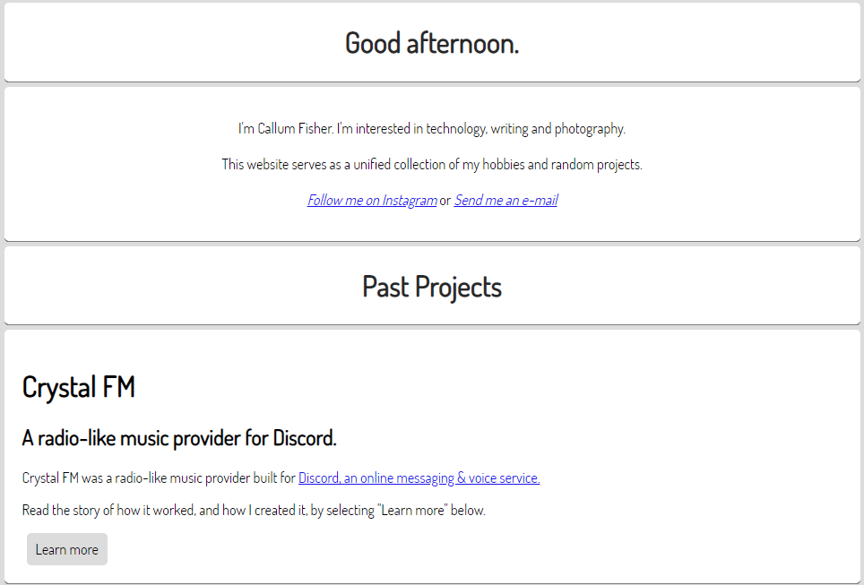
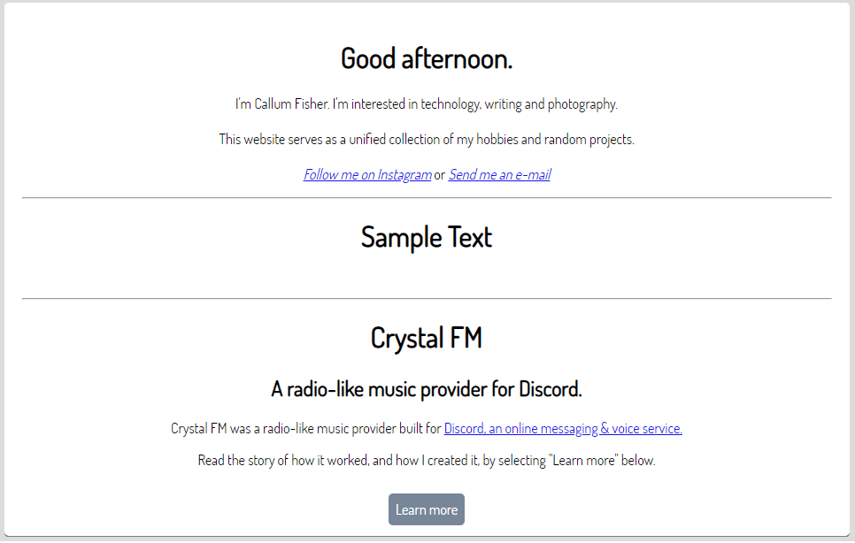

Website Changelog
Looking back on the progress of a project can be a great source of motivation, so I'm creating this changelog to look back on in the future.
Changes to articles will not be recorded here.
16th January 2025
= Changed hamburger menu within navbar to CSS-only.15th January 2025
= Fixed images not centering properly.= Updated site theme:


13th January 2025
= Published the website on GitHub pages.
23rd July 2024
= Slightly brightened text in dark mode for (hopefully) better contrast.= The website is now split into better sections including the Software section.
= I am making progress once again on finding the confidence to publish the website and commit to making content for it.
= Merged the old changelog dating back to 2019 with this one once again.
7th August 2023
+ Created the Alias Musuem page.4th January 2023
= Changed font from "Dosis Book" to "Dosis Medium"+ Created About page.
20th December 2022
= Made homepage better.+ Starting adding "Edited as well as "Published" dates to pages.
15th December 2022:
= Reversed Website Changelog order to show newest first.- Removed the "See latest" button from the Website Changelog.
- Removed the old Website Changelog page. I realized that changelog really belongs to a previous project.
14th December 2022:
= Made page titles and descriptions more consistent.8th December 2022:
= Improved the formatting of the homepage.= Improved button colour palettes.
= Improved consistency between pages.
= Shortened some dates (E.G.: from "8th December 2022" to 8.12.2022).
= Replaced center tags with appropriate CSS.
= Updated 404 page.
- Removed unused assets.
2nd December 2022:
18th June 2022:
= Improved the formatting of the homepage.= Improved button colour palettes.
= Slightly darkened text in dark mode to reduce eye-strain.
= Combined separate elements on the homepage into a singular box for a clearer layout.

Before:

After:

31st May 2022:
= Improved formatting.= Improved background & hyperlink colours in dark mode.
= Extended padding on navigation bar to fill width of the screen.
+ Added missing alt text for some images.
+ Added custom scroll bar.
- Removed unused assets.
22nd May 2022:
= Improved formatting.15th May 2022:
- Deleted the Projects page (projects are now listed in the Directory).7th May 2022:
= Improved buttons.21st April 2022:
+ Added extra separators between sections on some pages.= Fixed incorrect header sizes in "Notes" sections of all pages.
= Improved formatting of HTML in some pages.
20th April 2022:
= Shortened "Notes" sections of all pages.= Tidied up the credits.
13th April 2022:
= Fixed incorrect pixels in the favourites icon.= Changed some button colours.
+ Added a "Show credits" button to the Directory page.
12th April 2022:
= Changed favourites icon:
= Rounded off the bottom edges of separators.
= Improved button colours in dark mode.
+ Created a new Projects page to document projects. I'll produce reports on all of my projects here.
20th March 2022:
= Fixed buttons on old website changelog.= Improved button colours.
= Updated page titles.
13th March 2022:
= Moved styling for some buttons from HTML to stylesheets.= Made buttons more consistent and more visible.
- Removed the Articles page.
2nd March 2022:
= Made the background colour in dark mode consistent with other UI elements.= Changed outdated e-mail addresses in some files.
12th February 2022:
= Updated e-mail addresses and dates in files for better consistency.
= Made the Directory (homepage) a bit sleeker: Centered the welcome text and merged the functions of the infoboard with the welcome text.
Old:

New:

6th February 2022:
= Updated Easypea Games.5th February 2022:
= Changed hyperlink colour in dark mode to be more readable.= Updated e-mail addresses in files.
- Removed the logo from the homepage.
- Removed unused pages.
3rd February 2022:
+ Began a new changelog.- Removed unused code for the old article viewer.
19th December 2021

4th August 2020
- Removed the content viewer idea for better compatibility with web crawlers.= All pages have been reverted back from txt files to stand-alone html files.
= Submitted this website to Google's site index.
= Changed hyperlink colour to be more readable.
= Shortened the "dark" url parameter to "d"
= Shortened websitechangelog to changelog
= Made some edits to the changelog page, including updating invalid links
31st July 2020
= Changed some urls to allow for better compatibility with offline viewing.= Renamed contentviewer.html to index.html and shortened the "file" parameter to "f"
= Made some tweaks to the content viewer.
7th July 2020
+ Added a static image as a background for the website= Ditched self-hosting and tunnels with serveo & ngrok. This website is now officially hosted 24/7 on awardspace.
= Optimized the website to allow for better compatibility with hosts like awardspace
= Made some changes to the format of the Contact page
= Removed unused client-side content
= Tidied up useless semi-colons
1st July 2020
+ Added indicators to changelog page+ Added a countdown to the Not Found page for redirecting to the home page
+ Added a switch for toggling the light mode. Previously it was just a regular button on the navigation bar.
+ Added a Credits page to give credit to all of the icon artists.
= Improved light & dark themes, the background is now affected
= Migrated the Project Browser to the Content Viewer
= Organized changelog page
= Updated the Not Found page with new theme.
= Changed the "Website Changelog" button text on the navigation bar to just "Changelog" to simplify & shorten the text.
= Fixed the button to show older changes on the changelog page. It kept hiding them again after a few seconds.
28th June 2020
+ Created a Content Viewer page to display any .txt files. This feature has a toggleable dark mode which saves your choice.- Removed "Minor update" and "Major update" labels from the changelog page
= Tidied up more HTML files, now EVERYTHING is formatted much nicer than before
= Finished updating some pages with the new file addresses
= Everything on the Projects page has been migrated to the Content Viewer
= This page has been migrated to the Content Viewer
= Changed a few colours on some pages
26th June 2020
- Removed scrolling text below the navigation bar on the main page- Removed site title above navigation bar on main page
- Deleted unused server-side scripts
- Deleted unused client-side content
= Updated website name from [redacted] to [redacted]
= Updated all page titles & descriptions
= Restructured client-side content by organizing everything into folders
= Polished up the server code a bit
= Tidied up some HTML files, they're now formatted much nicer
20th March 2020
+ Added a project browser on the projects page- All useless socket.io code was removed from the server
= Updated information for the Crystal FM project (renamed to Wave24R) and placed information there into a development blog format.
= Updated website name from [redacted] to [redacted]
= The site title on the main page is now above the navigation bar
14th August 2019
= Slightly re-arranged addresses for client files.= Improved font on navigation bar (set to verdana)
= Moved "Now serving" text on main page by a few pixels.
= Updated website name from "InvadeNet" to [redacted]
= Updated favicon
12th June 2019
+ This server now hosts a page for my new Discord bot, Crystal FM.- The MPP General Documentation page has been deleted, and the Homepage UK page is now private.
- Removed old traces of the INRadio project.
= I've continued work on this project.
= General site clean up has been completed:
= I'm planning to publish the website and at least host it 24/7.
= Server code has been tidied up a little bit.
12th May 2019
+ Created Homepage UK page (a page that displays time, weather in your selected city, and various pieces of information to start your day)11th May 2019
+ Created Change Log page. (logs before this one were already recorded elsewhere and were moved here)+ Finally created and applied a favourites icon. (favicon.ico)
= Replaced all instances of "onclick" in the navigation bar in the HTML files with "href"
= Edited the main page slightly.
23rd April 2019
= Made all colours darker.= Theme changed to dark with cyan standing out a lot more, much smarter looking.
= Improved navigation bar. (Made it an actual navigation bar instead of just buttons)
17th April 2019
+ Created MPP General Documentation page24th April 2019
- INRadio server shutdown.
Back to Top